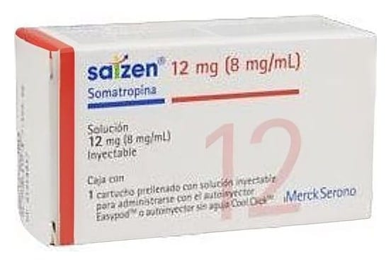

Saizen 12 mg/1,5 ml Enjeksiyonluk Çözelti İçeren Kartuş, 1 Adet

Ne için kullanılır
KT · Bölüm 1SAİZEN, büyüme hormonudur. SAİZEN’in esas etkisi çocuklarda ve ergenlerde büyümeyi artırmak, yetişkinlerde büyüme hormonu eksikliğini tedavi etmektir. SAİZEN’in içerdiği büyüme hormonu (Somatropin), “rekombinant DNA teknolojisi” (genetik mühendislik) denilen bir işlemle vücudun dışında elde edilmesi haricinde insanın doğal büyüme hormonu ile hemen hemen aynıdır. SAİZEN berrak ila hafif opak enjeksiyonluk çözelti şeklindedir. SAİZEN bir piston tıpası (kauçuk) ve geçmeli bir kapağı (alüminyum ve kauçuk) bulunan kullanıma hazır bir kartuşta (Tip I cam) sunulur. Ambalaj 1 ya da 5 kartuş içerir. Piyasada tüm ambalaj boyutları bulunmayabilir.
SAİZEN, aşağıdaki durumlarda kullanılır: Çocuklarda ve ergenlerde: - Büyüme hormonu salgısının olmaması veya azlığı ile meydana gelen büyüme geriliği olan kısa boylu çocukların tedavisinde, - Kromozom analizleri ile teyit edilmiş, gonadal disgenezili (cinsel farklılaşma bozukluğu olan) kızlarda büyüme geriliğinin tedavisinde (Turner sendromu), - Ergenlik öncesi, çocuklarda kronik böbrek yetmezliğinden kaynaklı büyüme geriliğinin tedavisinde, - 4 yaş ya da üzeri itibariyle büyümeyi yakalayamamış doğum haftasına göre küçük doğmuş kısa çocuklarda büyüme bozukluğunun tedavisinde kullanılır.
Sayfa 2/10
Yetişkinlerde: - Belirgin bir büyüme hormonu eksikliğinin (GHD) tedavisinde kullanılır. Bir test aracılığı ile tıbbi olarak ciddi bir büyüme hormonu eksikliği teşhis edilen yetişkinlerde bu tedavi uygulanır.
Doktor, eczacı ya da hemşireniz size ya da çocuğunuza bu ilacın neden verildiğini açıklayacaktır.